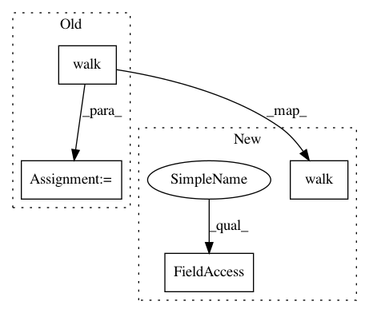

3c680c10486e1a39789b5505a531c7ee4165607a,tests/conftest.py,,read_file_list,#,64
Before Change
directory = os.path.join(static_dir, "tests/files/")
if worker_id() == "master":
logger.info("Collecting file lists from: {}".format(directory))
files = os.walk(directory)
file_list = []
for root, _, filenames in files:
for filename in filenames:
file_list.append(os.path.join(root, filename))
After Change
:return: List[str]
this_dir = os.path.abspath(os.path.dirname(os.path.abspath(__file__)))
directory = os.path.join(this_dir, "..")
logger.info("Collecting file lists from: {}".format(directory))
file_list = []
for root, _, filenames in os.walk(directory):
for filename in filenames:
file_list.append(os.path.join(root, filename))
return file_list
In pattern: SUPERPATTERN
Frequency: 4
Non-data size: 4
Instances
Project Name: openml/openml-python
Commit Name: 3c680c10486e1a39789b5505a531c7ee4165607a
Time: 2021-02-12
Author: feurerm@informatik.uni-freiburg.de
File Name: tests/conftest.py
Class Name:
Method Name: read_file_list
Project Name: scikit-image/scikit-image
Commit Name: 82b2fc33adba7be79b7ebce13a40fd1e1ebc210d
Time: 2016-12-21
Author: devel@sciunto.org
File Name: doc/ext/sphinx_gallery/docs_resolv.py
Class Name:
Method Name: _embed_code_links
Project Name: geometalab/OSMDeepOD
Commit Name: d973ac8eeef524b444d32a1459d52907dc4bae45
Time: 2015-11-21
Author: sevi_buehler@hotmail.com
File Name: tests/detection/testBoxWalker.py
Class Name: testBoxWalker
Method Name: test_walk
Project Name: geometalab/OSMDeepOD
Commit Name: d973ac8eeef524b444d32a1459d52907dc4bae45
Time: 2015-11-21
Author: sevi_buehler@hotmail.com
File Name: tests/detection/testBoxWalker.py
Class Name: testBoxWalker
Method Name: test_walk_with_show